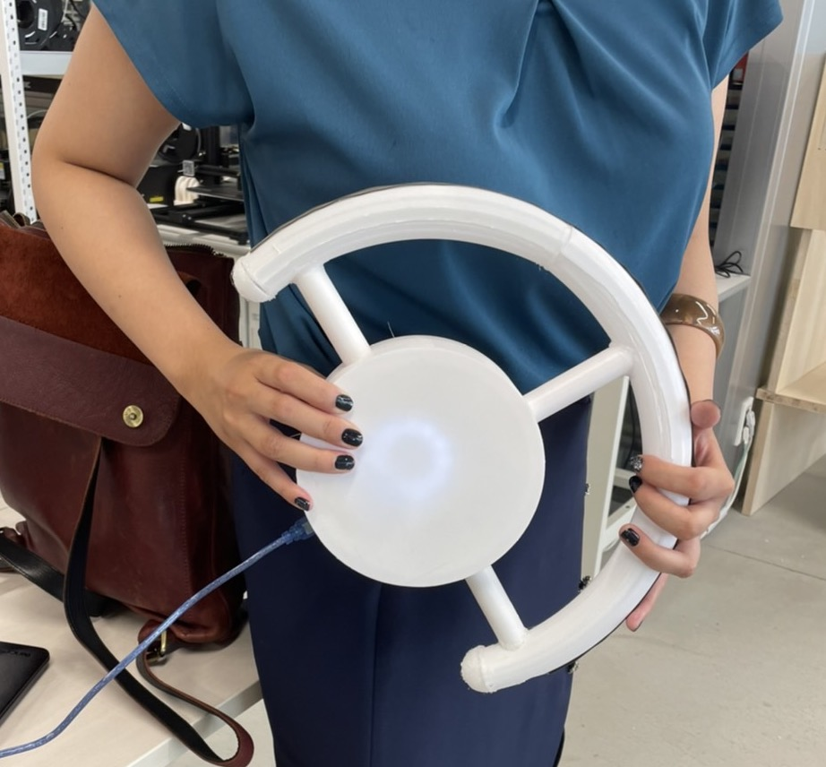
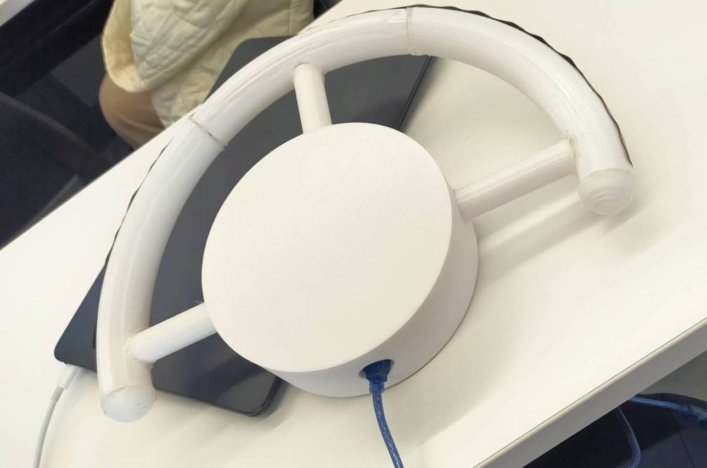

プレゼン資料：
こちらからダウンロード
作成データ(筐体)：
こちらからダウンロード
動作の動画 その１（ショート動画）：
こちら
動作の動画 その２：
- import doyolab
- import time
- #シリアルポートを入力-------------------------
- serial_port='/dev/cu.usbmodem1201'
- #-------------------------------------------
- #Arduinoとのシリアル通信設定-------------------
- my_arduino = doyolab.set_serial(serial_port,9600)
- #-------------------------------------------
- #user_key、sub_idの設定---------------------
- #自分のユーザーkeyを書く
- user_key1='y6nP71kPXap6Q89ZWTr2easHWxIzxo'
- #subIDはどのデバイスからのデータか、どのプロジェクトのデータかなどを認識するために使います
- sub_id1='pc'
- #-------------------------------------------
- #while Trueは無限ループ#----------------------
- while True:
- # Arduinoからreadlineコマンドでデータを取得し、data_from_arduinoという変数に格納
- data_from_arduino=my_arduino.readline()
- #stripコマンドで、data_from_arduinoの中の余計な文字を削除
- #さらにintで文字で送られてきたデータをint型に変換
- data=int(data_from_arduino.strip())
- print(data)
- # データの設定--------------------------------
- datetime_data = ""
- int_data = data #Arduinoから受け取った値をここでint_dataにいれる
- float_data = ""
- txt_data = ""
- # -------------------------------------------
- # データの送信---------------------------------
- # user_key
- # sub_id
- # 日付データ（空白にしてもサーバーで自動で日付を入れてくれる）:datetim_data
- # 整数データ:int_data
- # 実数データ(小数を含むデータ):float_data
- # テキストデータ:txt_data
- ret = doyolab.sendData_To_doyolabIoTserver(user_key1, sub_id1, datetime_data, int_data, float_data, txt_data)
- print(ret)
- # -------------------------------------------
- #-------------------------------------------
- # IoTサーバーからデータの取得----------------------------------------------------
- # user_key
- # sub_id
- # データ数：最新のデータからいくつのデータを取得するか？下記の例では1(最新のデータのみ）
- data_list = doyolab.getData_From_doyolabIoTserver(user_key1, sub_id1, 1)
- # リスト形式で取得される
- print(data_list)
- #0番目のデータの塊の中の2番目のデータを読みたい（0から始まるので、本当は3番目)
- int_data =int(data_list[0][2])
- print(int_data)
- # --------------------------------------------------------------
- # int_dataが300より大きかったら、'1'を送信(点灯させる）、それ以外の時は'0'を送る(消灯させる）
- if 950 <= int_data < 1000:
- to_arduino = '1';
- if 900 <= int_data < 950:
- to_arduino = '2';
- if 850 <= int_data < 900:
- to_arduino = '3';
- if 800 <= int_data < 850:
- to_arduino = '4';
- if 750 <= int_data < 800:
- to_arduino = '5';
- if 700 <= int_data < 750:
- to_arduino = '6';
- else:
- to_arduino = '0';
- # Arduinoにデータを送る
- my_arduino.write(to_arduino.encode())
- time.sleep(5) # 指定した秒数を待つ（msでなく秒なので、注意） サーバーに負荷がかかるので5より小さい値は設定しないでください。（実装する際は可能な限り大きな数字にしてください）
- int from_pc='0';
- int speaker_pin = 12;
- const int vol_pin = 0;
- #include <Adafruit_NeoPixel.h>
- #define PIN 13 // 信号用のピンを指定
- #define NUMPIXELS 12 // LEDの数を指定
- int brightness=20;//数値を変更して明るさ変更
- Adafruit_NeoPixel pixels(NUMPIXELS, PIN, NEO_GRB + NEO_KHZ800);
- void setup() {
- Serial.begin(9600);
- pixels.begin(); // NeoPixel出力ピンの初期化
- pixels.setBrightness(brightness);
- }
- void loop() {
- pixels.clear(); // すべてのLEDの色を0にセット
- int val=analogRead(vol_pin);
- Serial.println(val);
- delay(500);
-
- if(val<1000){
- tone(12,val);
- }else{
- noTone(12);
- }
- if(Serial.available() > 0){
- from_pc = Serial.read();
- }
- if (from_pc=='1'){
- for(int i =0; i < 12; i++){
- pixels.setPixelColor(i, pixels.Color(0,255,255));}
- pixels.show();
- }else if (from_pc=='2'){
- for(int i =0; i < 12; i++){
- pixels.setPixelColor(i, pixels.Color(127,255,212));}
- pixels.show();
- }else if (from_pc=='3'){
- for(int i =0; i < 12; i++){
- pixels.setPixelColor(i, pixels.Color(0,255,127));}
- pixels.show();
- }else if (from_pc=='4'){
- for(int i =0; i < 12; i++){
- pixels.setPixelColor(i, pixels.Color( 0,128,0));}
- pixels.show();
- }else if (from_pc=='5'){
- for(int i =0; i < 12; i++){
- pixels.setPixelColor(i, pixels.Color(240,128,128));}
- pixels.show();
- }else if (from_pc=='6'){
- for(int i =0; i < 12; i++){
- pixels.setPixelColor(i, pixels.Color(0,0,205));}
- pixels.show();
- }else {
- for(int i =0; i < 12; i++){
- pixels.setPixelColor(i, pixels.Color( 255,255,255));}
- pixels.show();
-
- }
- }
今期、初めて電子工作・IoTに取り組んだが正直理想のクオリティまでは持っていけず悔しい。が、タイムラグはあれどサーバーを介して遠隔で機械を光らせることもできたし、音階も奏でることはできたので、少し自信になった。
それから、今期は班リーダーになったものの、なかなかメンバーを作業しやすいように・スケジュール通りに作業を進められるように良い感じにフォローできず、グループメンバーには大変申し訳なかったと思う。
それでも一緒に行動してくれた班のメンバーには感謝しかない。